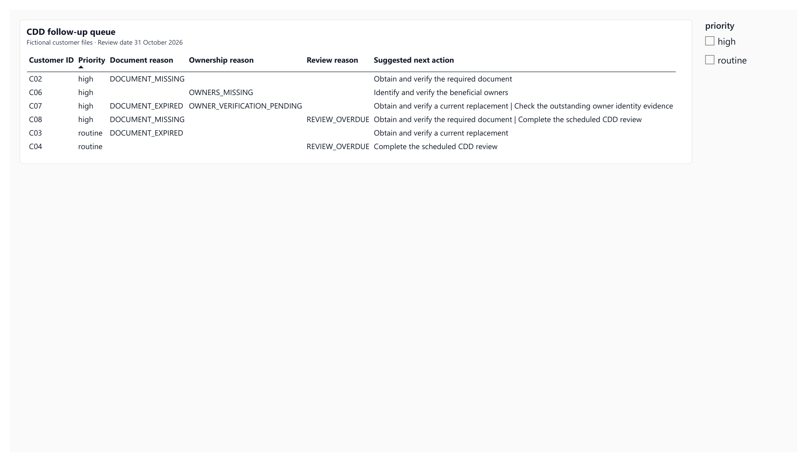
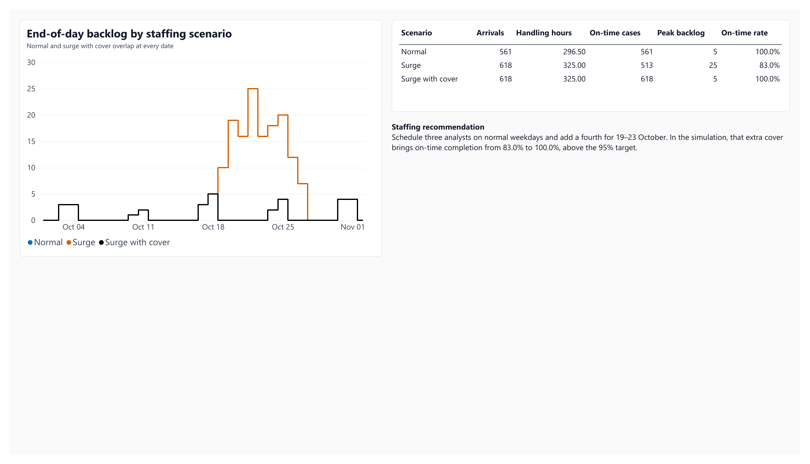

Customer files flagged
Four high-priority and two routine cases at the 31 October 2026 snapshot.
Case study · KYC operations
Which customer files need follow-up, and how much analyst cover would keep cases on time during a short surge?
Four high-priority and two routine cases at the 31 October 2026 snapshot.
Mean absolute error in cases per day across all 31 days in October.
Adding a fourth analyst for the five surge days met the simulated 95% on-time target.
The queue records eight reasons across six customers. One company had expired registry extracts and a beneficial owner whose identity verification was pending. Both reasons and their suggested actions appear on one row.
The simulation raised onboarding volume by 50% on 19–23 October, adding 28.5 handling hours. A fourth analyst added 30 productive hours during those five days.
| Scenario | Staffing | On time | Peak backlog |
|---|---|---|---|
| Normal demand | 3 analysts | 561 / 561 (100%) | 5 |
| Surge | 3 analysts | 513 / 618 (83.0%) | 25 |
| Surge with cover | 3 analysts plus 1 on 19–23 October | 618 / 618 (100%) | 5 |
Summarise document and beneficial-owner records separately in MySQL before joining them to the customer register. Assess document validity, owner verification and scheduled review status as of 31 October 2026.
Build a complete May–October calendar with 2,902 synthetic onboarding cases and 364 scheduled reviews. Forecast daily onboarding from the actual count seven days earlier. Take scheduled reviews from the calendar.
Allow 30 minutes per onboarding case, 45 minutes per review and six productive hours per analyst per weekday. Process the oldest cases first. Weekday arrivals are due that evening, and weekend arrivals are due Monday evening.
Check that SQL returns one assessment row per customer and that the daily workload contains 184 distinct dates. Test the priority slicer in Power BI and reconcile the three scenario totals, on-time rates and backlog peaks with Python.
Open a preview at full size to read the labels.


I ran and reconciled the MySQL and Python analyses, reviewed the analyst case notes, and built and tested the Power BI report for this AI-assisted portfolio project.
The Basel Committee guidance informed the customer due diligence (CDD) concepts. A Wise role description prompted the capacity-planning question. Basel Committee guidance · Wise role description